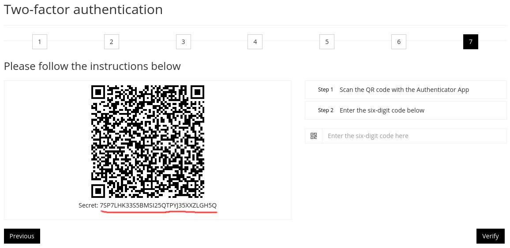

To easily optain the secret the extension is required during the setup of 2FA, this will still allow you to use Google Authenticator on your phone, but you will need to set it up again as well.
Step 1: goto https://mfa.uu.nl/account/basic
Step 1.2: IF 2FA is currently enabled, choose either the "deactivate with Authenticator" or "deactivate with Recovery Code" option. And follow the on-screen instructions.
Step 2: Click "Get started", and then choose the "Authenticator" option:
Step 3: Click on the button for the 7th step. If you so choose you can also navigate through the other steps, though it is not required.
Step 4: Copy the code at the bottom of the QR code, this is your secret. After copying, you can paste it into the extension by clicking on the extension icon in the browser's toolbar.

Step 5: Scan the QR code with an Authenticator app (eg. Google Authenticator), and finish the setup by enter the 6-digit code provided by it.